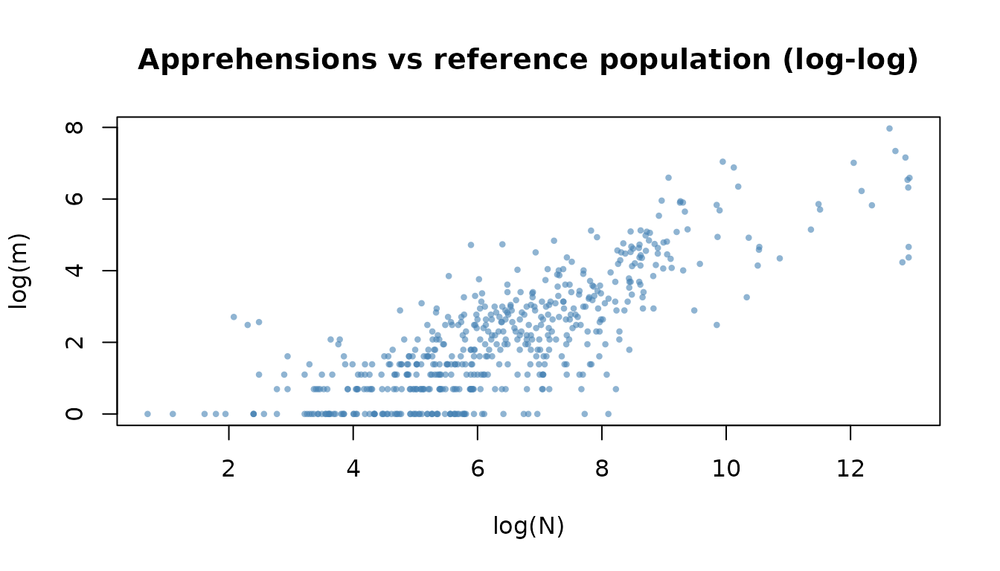
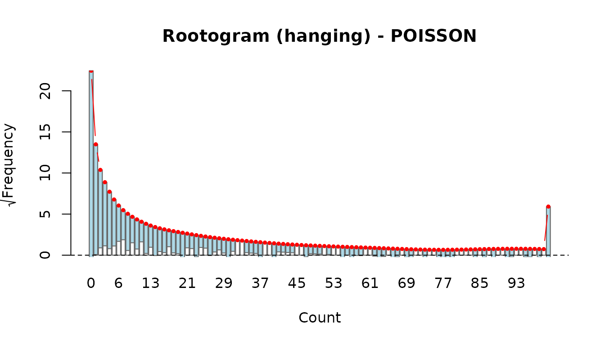
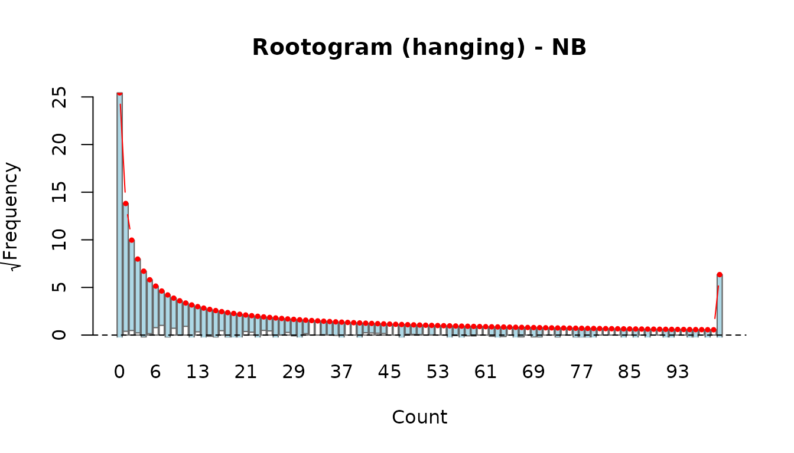
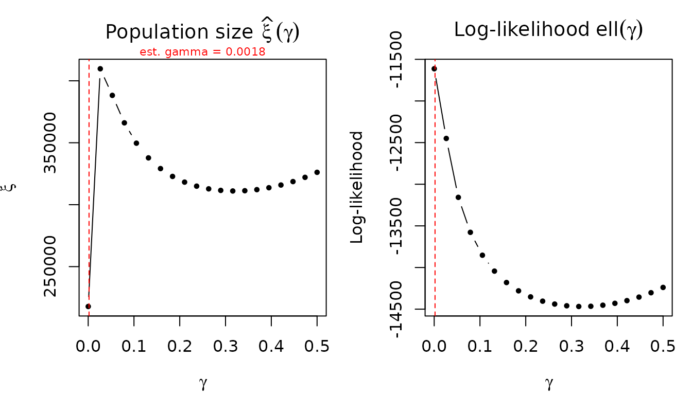

Introduction
This vignette walks through a complete analysis estimating the
unauthorized foreign population in Poland using the
irregular_migration dataset shipped with the
uncounted package. The workflow covers every step from
loading the data through fitting models, obtaining population size
estimates with confidence intervals, running bootstrap inference,
selecting among competing specifications, and performing sensitivity
analysis. By the end you will have a reproducible pipeline that can be
adapted to other datasets.
Data Exploration
The irregular_migration dataset is a country-level panel
(2019–2024) with three count variables per observation:
- m – foreigners apprehended by the Border Guard for unauthorized stay (the quantity whose hidden population we want to estimate).
- n – foreigners identified by the Police (an auxiliary, partially overlapping administrative source).
- N – foreigners registered in the Social Insurance Institution (ZUS), used as a proxy for the total known foreign population from a given country.
data(irregular_migration)
str(irregular_migration)
#> 'data.frame': 1382 obs. of 8 variables:
#> $ year : Factor w/ 6 levels "2019","2020",..: 1 1 1 1 1 1 1 1 1 1 ...
#> $ sex : Factor w/ 2 levels "Female","Male": 1 1 1 1 1 1 1 1 1 1 ...
#> $ country_code: chr "AFG" "AGO" "ALB" "ARG" ...
#> $ country : chr "Afghanistan" "Angola" "Albania" "Argentina" ...
#> $ continent : chr "Asia" "Africa" "Europe" "Americas" ...
#> $ m : int 0 2 0 0 8 2 2 1 0 55 ...
#> $ n : int 0 0 1 1 17 0 1 1 0 59 ...
#> $ N : int 269 15 64 52 1089 44 219 47 23 11023 ...A large share of observations have zero apprehensions, reflecting the many small countries of origin with no recorded unauthorized stay.
cat("Share m == 0:", round(mean(irregular_migration$m == 0) * 100, 1), "%\n")
#> Share m == 0: 48.6 %
cat("Share n == 0:", round(mean(irregular_migration$n == 0) * 100, 1), "%\n")
#> Share n == 0: 48.3 %A log–log scatter of the apprehension count against the reference
population reveals the power-law relationship that motivates the model.
Observations with m > 0 and n > 0 are
shown.
pos <- irregular_migration$m > 0 & irregular_migration$n > 0
plot(
log(irregular_migration$N[pos]),
log(irregular_migration$m[pos]),
xlab = "log(N)", ylab = "log(m)",
main = "Apprehensions vs reference population (log-log)",
pch = 16, cex = 0.6, col = adjustcolor("steelblue", 0.6)
)
Fitting Models
We fit four specifications, all using the same formula interface. The core model is
where governs the elasticity with respect to the reference population, captures the relationship with the auxiliary detection rate, and is a baseline offset ensuring the rate term is positive even when .
Model 1: Poisson (unconstrained, estimated gamma)
This is the recommended default. Poisson pseudo-maximum likelihood (PPML) is consistent for the conditional mean even under heteroscedasticity, and gamma is estimated jointly.
fit_pois <- estimate_hidden_pop(
data = irregular_migration,
observed = ~ m,
auxiliary = ~ n,
reference_pop = ~ N,
method = "poisson",
gamma = "estimate",
countries = ~ country
)
summary(fit_pois)
#> Unauthorized population estimation
#> Method: POISSON | vcov: HC3
#> N obs: 1382
#> Gamma: 0.001831 (estimated)
#> Log-likelihood: -11380.65
#> AIC: 22767.3 BIC: 22782.99
#> Deviance: 20158.5
#>
#> Coefficients:
#> Estimate Std. Error z value Pr(>|z|)
#> alpha 0.736646 0.040258 18.298 < 2.2e-16 ***
#> beta 0.575046 0.091861 6.260 3.85e-10 ***
#> ---
#> Signif. codes: 0 '***' 0.001 '**' 0.01 '*' 0.05 '.' 0.1 ' ' 1
#>
#> -----------------------
#> Population size estimation results:
#> (BC = bias-corrected using model-based variance)
#> Observed Estimate Estimate (BC) CI lower CI upper
#> (all) 27,105 290,597 290,498 127,726 660,703Key output to look for:
-
alpha – the elasticity with respect to
N. Values below 1 indicate that the unauthorized population grows less than proportionally with the reference population. - beta – the elasticity with respect to the detection rate. Positive values mean higher auxiliary rates are associated with more apprehensions.
- gamma – the estimated baseline offset (typically small).
Model 2: Poisson constrained (alpha in (0,1), beta > 0)
Constraining alpha to the unit interval and beta to be positive enforces theoretical expectations. Internally, alpha is parameterised via a inverse logit link and beta via an exponential link, so the reported coefficients are on the link scale.
fit_pois_c <- estimate_hidden_pop(
data = irregular_migration,
observed = ~ m,
auxiliary = ~ n,
reference_pop = ~ N,
method = "poisson",
gamma = "estimate",
constrained = TRUE,
countries = ~ country
)
summary(fit_pois_c)
#> Unauthorized population estimation
#> Method: POISSON | vcov: HC3
#> N obs: 1382
#> Gamma: 0.001831 (estimated)
#> Log-likelihood: -11380.65
#> AIC: 22767.3 BIC: 22782.99
#> Deviance: 20158.5
#>
#> Coefficients (link scale: logit for alpha, log for beta):
#> Estimate Std. Error z value Pr(>|z|)
#> alpha 1.02861 0.20752 4.9568 7.167e-07 ***
#> beta -0.55331 0.15974 -3.4637 0.0005328 ***
#> ---
#> Signif. codes: 0 '***' 0.001 '**' 0.01 '*' 0.05 '.' 0.1 ' ' 1
#>
#> Response-scale parameters (alpha in (0,1), beta > 0):
#> Alpha (response scale):
#> alpha SE(alpha)
#> (all) 0.7366 0.0403
#> Beta (response scale):
#> beta SE(beta)
#> 1 0.575 0.0919
#>
#> -----------------------
#> Population size estimation results:
#> (BC = bias-corrected using model-based variance)
#> Observed Estimate Estimate (BC) CI lower CI upper
#> (all) 27,105 290,597 290,520 127,736 660,752The summary() output reports both link-scale
coefficients (with standard errors and p-values) and response-scale
alpha/beta values with delta-method standard errors.
Model 3: Negative Binomial (estimated gamma)
The NB model adds a dispersion parameter theta to accommodate overdispersion beyond what Poisson allows.
fit_nb <- estimate_hidden_pop(
data = irregular_migration,
observed = ~ m,
auxiliary = ~ n,
reference_pop = ~ N,
method = "nb",
gamma = "estimate",
countries = ~ country
)
#> NB with theta in sandwich: HC3 not available, using HC1 correction.
summary(fit_nb)
#> Unauthorized population estimation
#> Method: NB | vcov: HC3
#> N obs: 1382
#> Gamma: 0.01901 (estimated)
#> Theta (NB dispersion): 1.0616
#> Log-likelihood: -2693.48
#> AIC: 5394.97 BIC: 5415.89
#> Deviance: 1272.2
#>
#> Coefficients:
#> Estimate Std. Error z value Pr(>|z|)
#> alpha 0.871636 0.023598 36.938 < 2.2e-16 ***
#> beta 1.034268 0.080113 12.910 < 2.2e-16 ***
#> ---
#> Signif. codes: 0 '***' 0.001 '**' 0.01 '*' 0.05 '.' 0.1 ' ' 1
#>
#> -----------------------
#> Population size estimation results:
#> (BC = bias-corrected using model-based variance)
#> Observed Estimate Estimate (BC) CI lower CI upper
#> (all) 27,105 1,259,565 1,231,048 731,136 2,072,775Model 4: NB two-stage (gamma from Poisson, fixed in NB)
A pragmatic two-stage approach: first estimate gamma from the Poisson model (which is better identified), then fix it in the NB model. This avoids potential numerical instability when estimating gamma and theta simultaneously.
gamma_from_pois <- fit_pois$gamma
fit_nb2 <- estimate_hidden_pop(
data = irregular_migration,
observed = ~ m,
auxiliary = ~ n,
reference_pop = ~ N,
method = "nb",
gamma = gamma_from_pois,
countries = ~ country
)
#> NB with theta in sandwich: HC3 not available, using HC1 correction.
summary(fit_nb2)
#> Unauthorized population estimation
#> Method: NB | vcov: HC3
#> N obs: 1382
#> Gamma: 0.001831 (fixed)
#> Theta (NB dispersion): 0.9491
#> Log-likelihood: -2727.07
#> AIC: 5460.14 BIC: 5475.84
#> Deviance: 1267.27
#>
#> Coefficients:
#> Estimate Std. Error z value Pr(>|z|)
#> alpha 0.745560 0.015958 46.721 < 2.2e-16 ***
#> beta 0.597130 0.023991 24.890 < 2.2e-16 ***
#> ---
#> Signif. codes: 0 '***' 0.001 '**' 0.01 '*' 0.05 '.' 0.1 ' ' 1
#>
#> -----------------------
#> Population size estimation results:
#> (BC = bias-corrected using model-based variance)
#> Observed Estimate Estimate (BC) CI lower CI upper
#> (all) 27,105 318,958 315,391 227,252 437,716Population Size Estimates
The popsize() function extracts the estimated total
unauthorized population
along with bias-corrected estimates and confidence intervals.
ps_pois <- popsize(fit_pois)
ps_pois
#> group observed estimate estimate_bc lower upper share_pct
#> 1 (all) 27105 290597.5 290498.3 127726.4 660703.2 100The columns are:
-
group – label for each alpha-covariate group (here
"(all)"since we have no covariates on alpha). - observed – total observed count .
- estimate – plug-in estimate .
- estimate_bc – bias-corrected estimate using a second-order Taylor expansion. Because is convex, the plug-in estimator is biased upward by Jensen’s inequality.
- lower, upper – confidence interval bounds. The CI is constructed by a monotone transformation of the Wald interval on the link scale, with bias correction applied at the bounds.
- share_pct – group share as a percentage of the total.
Comparing across all four models:
models <- list(
Poisson = fit_pois,
Poisson_constr = fit_pois_c,
NB = fit_nb,
NB_twostage = fit_nb2
)
ps_table <- do.call(rbind, lapply(names(models), function(nm) {
ps <- popsize(models[[nm]])
data.frame(
Model = nm,
Estimate = sum(ps$estimate),
BC = sum(ps$estimate_bc),
Lower = sum(ps$lower),
Upper = sum(ps$upper)
)
}))
ps_table
#> Model Estimate BC Lower Upper
#> 1 Poisson 290597.5 290498.3 127726.4 660703.2
#> 2 Poisson_constr 290597.4 290520.0 127736.0 660752.4
#> 3 NB 1259565.1 1231048.3 731135.6 2072775.5
#> 4 NB_twostage 318957.8 315391.5 227251.8 437716.2Stratified population size
The by parameter allows computing population size by any
variable in the data, not just the cov_alpha groups. This
is useful when alpha varies by sex but you want totals by year,
continent, or country.
# Population size by year (using the same fitted alpha)
popsize(fit_pois, by = ~ factor(year))
# By continent
popsize(fit_pois, by = ~ continent)
# By country (one estimate per country)
popsize(fit_pois, by = ~ country)The total across all by-groups equals the total from the
default grouping.
Bootstrap Inference
The bootstrap_popsize() function uses the fractional
weighted bootstrap (FWB) of Xu et al. (2020). Cluster bootstrap by
country is recommended to account for within-country correlation across
years.
set.seed(2025)
boot_pois <- bootstrap_popsize(
fit_pois,
R = 999,
cluster = ~ country_code,
ci_type = "perc",
seed = 2025
)
boot_pois
# #> Bootstrap population size estimation
# #> R = 999 | CI type: perc | Point estimate: median | Converged: 998 / 999
# #> Cluster bootstrap
# #> 95% CIAccess the detailed results:
# Main table (selected point estimate + CI)
boot_pois$popsize
# Full table with all point estimate types
boot_pois$popsize_full
# Bootstrap distribution summary
summary(boot_pois)Comparing bootstrap and analytical CIs
ps_analytical <- popsize(fit_pois)
data.frame(
Type = c("Analytical", "Bootstrap"),
Estimate = c(sum(ps_analytical$estimate_bc),
boot_pois$popsize$estimate),
Lower = c(sum(ps_analytical$lower),
boot_pois$popsize$lower),
Upper = c(sum(ps_analytical$upper),
boot_pois$popsize$upper)
)The bootstrap median is typically smaller than the plug-in estimate. This is expected: is convex in for , so by Jensen’s inequality . The bootstrap mean inherits this upward bias, while the bootstrap median is more robust to the right skew of the bootstrap distribution and is therefore the recommended point estimate.
Model Selection
Information criteria and fit statistics
comp <- compare_models(
Poisson = fit_pois,
Poisson_constr = fit_pois_c,
NB = fit_nb,
NB_twostage = fit_nb2,
sort_by = "AIC"
)
#> NB with theta in sandwich: HC3 not available, using HC1 correction.
#> NB with theta in sandwich: HC3 not available, using HC1 correction.
comp
#> Model comparison
#> ------------------------------------------------------------
#> Model Method Constrained n_par logLik AIC BIC Deviance
#> NB NB FALSE 4 -2693.48 5394.97 5415.89 1272.20
#> NB_twostage NB FALSE 3 -2727.07 5460.14 5475.84 1267.27
#> Poisson_constr POISSON TRUE 3 -11380.65 22767.30 22782.99 20158.50
#> Poisson POISSON FALSE 3 -11380.65 22767.30 22782.99 20158.50
#> Pearson_X2 RMSE R2_cor R2_D R2_CW
#> 2943.93 139.85 0.5168 0 0.9432
#> 2600.28 82.27 0.5620 0 0.9442
#> 25366.63 81.47 0.5623 0 0.9749
#> 25366.63 81.47 0.5623 0 0.9749The output includes three pseudo
measures: R2_cor (squared correlation), R2_D
(explained deviance relative to a null model without covariates, see
Cameron & Trivedi, 2013), and R2_CW
(Cameron–Windmeijer, 1997, which accounts for the model’s variance
function).
Note on R2_D: The null model is the
same specification (same method, same gamma) but without
cov_alpha / cov_beta — i.e., a single
and single
.
If your model already has no covariates, then model = null and
R2_D = 0 by construction. R2_D becomes
informative when you compare models with covariates (e.g.,
cov_alpha = ~ year + sex) against the covariate-free
baseline: it tells you how much of the deviance is explained by
group-varying parameters beyond the basic power-law structure.
Likelihood ratio test: Poisson vs NB
lr <- lrtest(fit_pois, fit_nb)
lr
#> Likelihood ratio test
#> ----------------------------------------
#> Model 1: POISSON (logLik = -11380.65 )
#> Model 2: NB (logLik = -2693.48 )
#> LR statistic: 17374.33 on 1 df
#> (Boundary-corrected: 0.5 * P(chi2 > LR), Self & Liang 1987)
#> p-value: < 2.2e-16When comparing Poisson (H0) against NB (H1), the dispersion parameter theta lies on the boundary of its parameter space under H0 (). The function automatically applies the Self & Liang (1987) correction, yielding .
Diagnostics
The four-panel diagnostic plot shows fitted vs observed, Anscombe residuals, scale-location, and a normal Q-Q plot.
The rootogram compares observed and fitted count frequencies. Hanging bars that touch the zero line indicate a good fit.
rootogram(fit_pois)
rootogram(fit_nb)
Why Poisson as the main model?
Despite the NB often having a better AIC/BIC (reflecting genuine overdispersion), the Poisson model is recommended as the primary specification for several reasons:
- Consistency. Poisson PML is consistent for the conditional mean as long as is correctly specified, regardless of the true variance function. The NB requires correct specification of both the mean and the variance.
- Robustness. HC-robust standard errors correct for overdispersion in the Poisson model without adding an extra parameter that must be estimated.
- Stability. The NB model’s joint estimation of gamma and theta can be numerically fragile when many observations are zero. The two-stage approach mitigates this but introduces a conditioning step.
The NB results serve as a useful robustness check on the population size estimate.
Exploratory log-log plots
The plot_explore() function produces marginal log-log
scatterplots that visualise the power-law relationships.
plot_explore(fit_pois)Sensitivity Analysis
Leave-one-out by country
LOO analysis refits the model dropping one country at a time and reports the change in .
loo_pois <- loo(fit_pois, by = "country")
print(loo_pois)
# #> Leave-one-out sensitivity analysis
# #> Dropped by: country
# #> ...
# #> Most influential (by |delta xi|):
# #> dropped dxi pct_change
# #> Ukraine -12345.0 -8.50
# #> ...
plot(loo_pois)The coefficient stability summary shows how much alpha and beta shift:
summary(loo_pois)Comparing LOO across models
loo_nb <- loo(fit_nb, by = "country")
comp_loo <- compare_loo(loo_pois, loo_nb, labels = c("Poisson", "NB"))
print(comp_loo)
plot(comp_loo, type = "scatter")
plot(comp_loo, type = "bar")The scatter plot shows whether the same countries are influential under both models. Points near the diagonal indicate agreement; points in off-diagonal quadrants indicate divergent influence.
Gamma profile
The profile_gamma() function refits the model across a
grid of fixed gamma values and shows how
and the log-likelihood depend on gamma. A flat xi profile indicates
robustness; a steep profile suggests sensitivity.
prof <- profile_gamma(fit_pois)
The returned data frame can be inspected directly:
head(prof)
#> gamma xi loglik
#> 1 0.00010000 217823.6 -11613.29
#> 2 0.02641053 409727.4 -12450.12
#> 3 0.05272105 388248.7 -13157.48
#> 4 0.07903158 366068.5 -13577.46
#> 5 0.10534211 349654.2 -13852.40
#> 6 0.13165263 337789.6 -14043.25Reporting Results
To prepare results for a paper, combine the analytical and bootstrap estimates into a single summary table.
# Analytical results
ps_a <- popsize(fit_pois)
# Bootstrap results (assuming boot_pois was computed above)
ps_b <- boot_pois$popsize_full
results <- data.frame(
Observed = sum(ps_a$observed),
Plugin = round(sum(ps_a$estimate)),
Plugin_BC = round(sum(ps_a$estimate_bc)),
Analytical_Lower = round(sum(ps_a$lower)),
Analytical_Upper = round(sum(ps_a$upper)),
Boot_Median = round(sum(ps_b$boot_median)),
Boot_Lower = round(sum(ps_b$lower)),
Boot_Upper = round(sum(ps_b$upper))
)
resultsExtract coefficients for reporting:
coefs <- coef(fit_pois)
se <- sqrt(diag(vcov(fit_pois)))
ci_lo <- coefs - 1.96 * se
ci_hi <- coefs + 1.96 * se
coef_table <- data.frame(
Parameter = names(coefs),
Estimate = round(coefs, 4),
SE = round(se, 4),
CI_lower = round(ci_lo, 4),
CI_upper = round(ci_hi, 4),
row.names = NULL
)
coef_table
#> Parameter Estimate SE CI_lower CI_upper
#> 1 alpha 0.7366 0.0403 0.6577 0.8156
#> 2 beta 0.5750 0.0919 0.3950 0.7551The estimated gamma and model fit statistics:
cat("Gamma:", round(fit_pois$gamma, 6), "\n")
#> Gamma: 0.001831
cat("Log-likelihood:", round(fit_pois$loglik, 2), "\n")
#> Log-likelihood: -11380.65
cat("AIC:", round(AIC(fit_pois), 2), "\n")
#> AIC: 22767.3
cat("BIC:", round(BIC(fit_pois), 2), "\n")
#> BIC: 22782.99
cat("Deviance:", round(deviance(fit_pois), 2), "\n")
#> Deviance: 20158.5